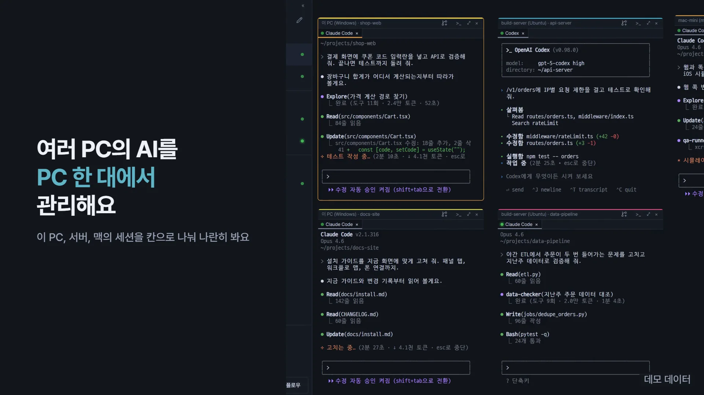
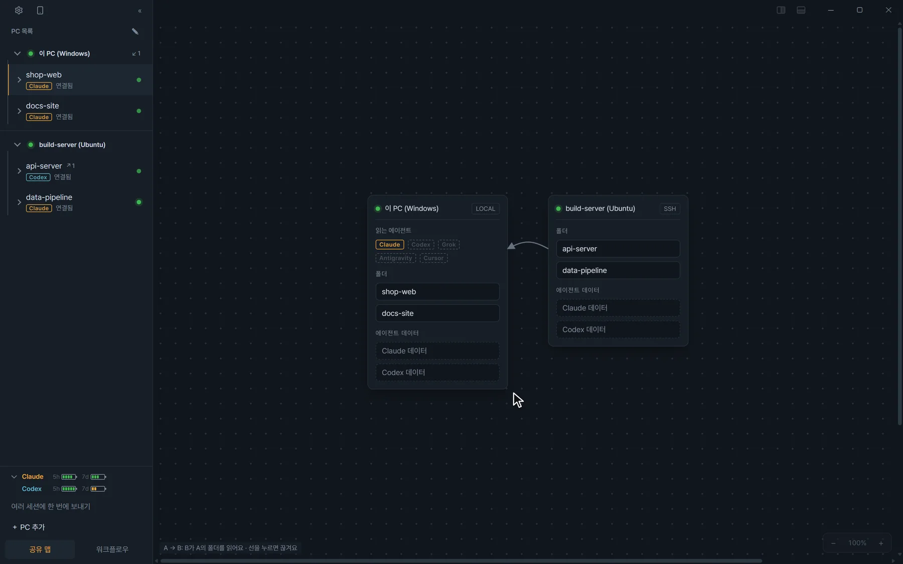
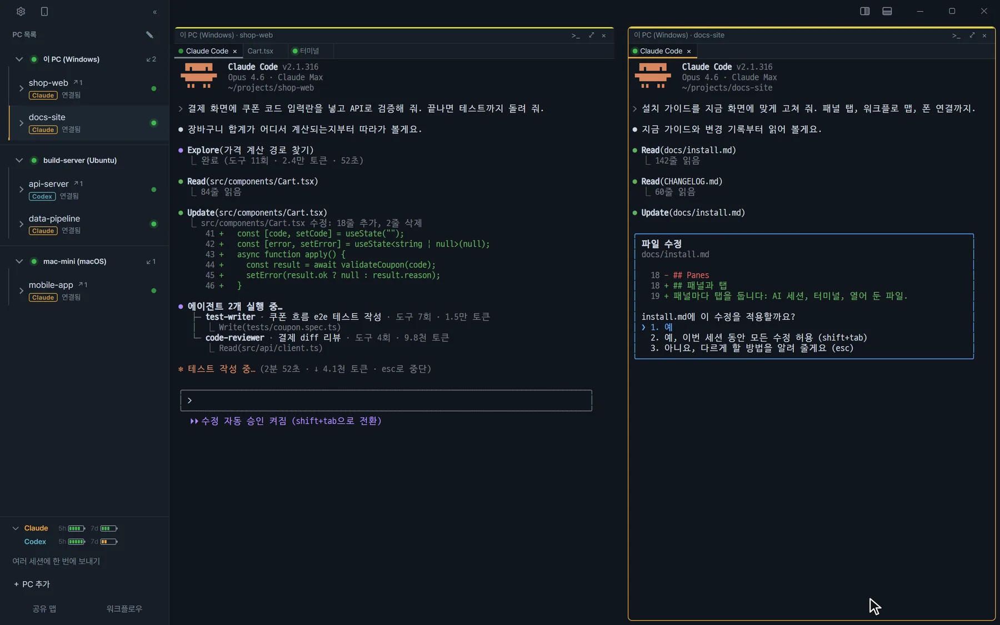
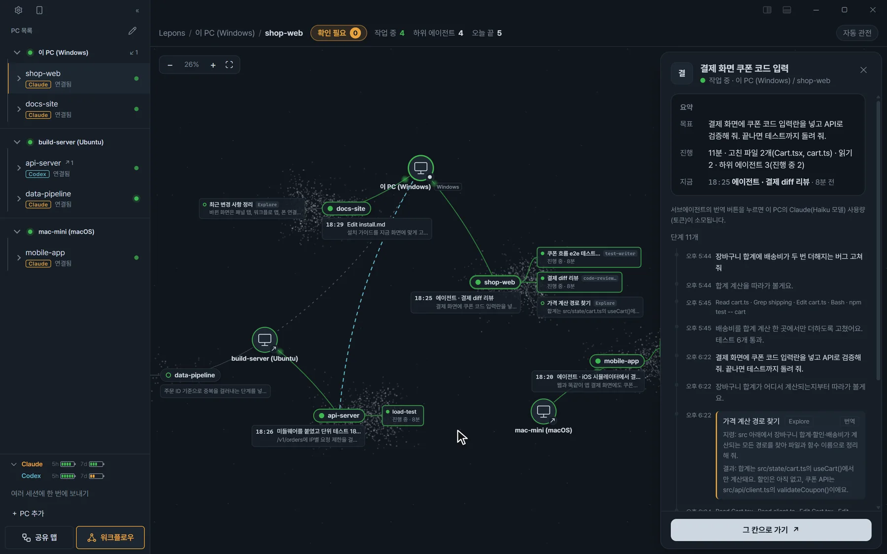
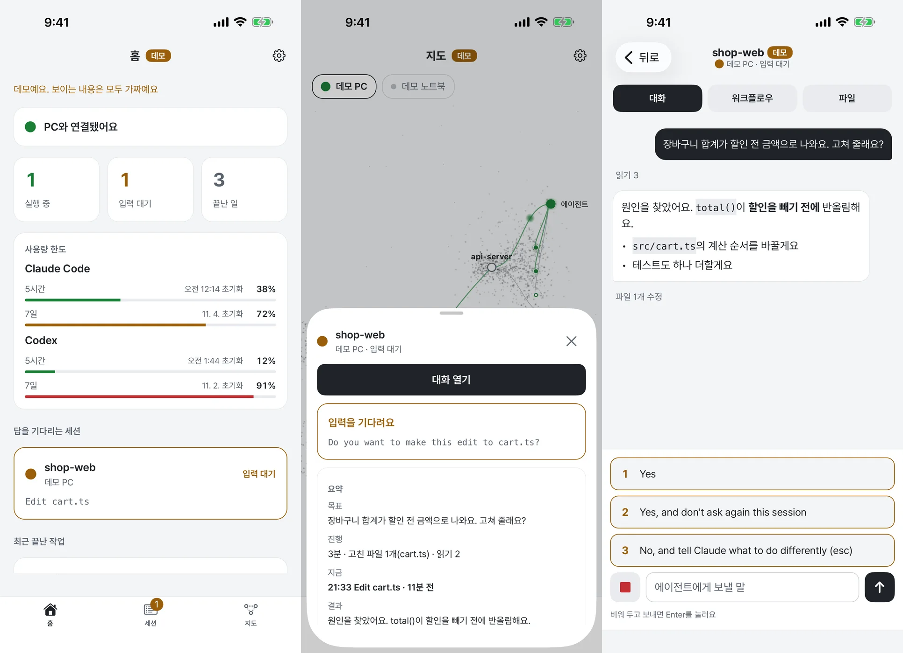

집 PC, 회사 PC, 원격 서버에서 따로 도는 Claude Code·Codex 세션을 데스크톱 앱 한 창에 모으고, 다른 PC의 AI가 내 코드를 git 없이 읽게 하고, 답이 필요한 순간에는 폰으로 바로 답하게 만든 제품입니다. 문제 정의부터 설계, 개발, App Store 출시, 홍보 영상 제작까지 혼자 맡고 있습니다.

저는 Windows PC, Mac, 원격 Linux 서버에서 Claude Code와 Codex를 동시에 돌리며 일합니다. 기기가 늘수록 두 군데서 일이 막혔습니다.
한 PC의 AI가 다른 PC에 있는 최신 코드를 바로 읽지 못해서 매번 커밋하고 푸시하고 풀하거나 인수인계 문서를 써야 했습니다.
정작 가장 급하게 나눠야 하는 .env, 커밋 전 작업본, git이 추적하지 않는 파일은 git으로 옮길 수 없었습니다.
또 어느 세션이 내 답을 기다리는지 알려면 창을 하나씩 열어 봐야 했고, 자리를 비우면 AI는 질문 하나에 멈춘 채로 있었습니다.
병목은 실시간 공동 편집이 없어서가 아니라 상대 PC의 현재 상태를 바로 읽고 물어볼 수 없어서 생긴다고 정의했습니다. 그래서 두 AI가 같은 파일을 함께 고치는 실시간 동기화(CRDT)나 git 브랜치 공유 대신, 각 PC가 자기 코드를 그대로 갖고 다른 PC의 AI는 그 코드를 원본 그대로 읽기만 하는 구조를 택했습니다.
여러 PC와 서버에서 AI 코딩 에이전트를 돌리는 개발자가 첫 고객입니다. GitHub에 올릴 수 없는 폐쇄망 코드를 다루는 사람, git이 아직 낯선 비개발자도 같은 문제를 겪어서 함께 대상으로 잡았습니다.
PC용 데스크톱 앱이 모든 머신의 세션을 모으는 조종석이고, 폰 앱은 그 조종석에 붙는 컴패니언입니다. 원격 머신에는 별도의 Lepons 서버 프로그램을 깔지 않고 SSH 하나로 연결합니다.




설계를 시작하고 4개월 동안 커밋 980여 개를 쌓으며 데스크톱 1.0부터 1.10.17까지 릴리스했습니다. 직접 매일 쓰는 도구라서 불편한 점이 보이면 그날 고치고 다음 버전으로 내보냈습니다.
| 도구 | 잘하는 것 | Lepons가 다른 점 |
|---|---|---|
| cmux | macOS 터미널에서 세로 탭과 알림으로 여러 AI 작업 확인 | Windows와 macOS에서 쓰고, 여러 컴퓨터의 코드를 AI끼리 공유 |
| VS Code + Remote-SSH | 원격 머신에 VS Code Server를 깔아 원격 개발 환경 구성 | 원격에 서버 프로그램 없이 여러 컴퓨터의 AI 세션을 한 창에 나란히 |
| 일반 터미널 · SSH 클라이언트 | 연결까지 | 세션마다 에이전트를 고르고 최신으로 유지하며, 무엇을 하는지와 답을 기다리는지 보여 줌 |
설계도 AI 에이전트를 나눠 맡겨 진행했습니다. 아이디어는 생성 에이전트가 10개씩 내고 검증 에이전트가 창의성·구현 가능성·실용성·효용성 4개 축으로 채점하는 루프를 5번 돌려 골랐습니다. git 없는 공유 구조는 설계안 6개를 정확성·운영·보안 3개 관점에서 반박하게 해서, 세 관점 모두에서 고칠 수 없는 결함이 나오지 않은 안을 채택했습니다. 결정마다 근거, 기각한 대안, 결정이 뒤집힐 조건을 기록합니다.
데스크톱 앱이 이미 열어 둔 SSH 연결에 역방향 포워딩을 걸어, 이 PC에서 도는 MCP 서버를 원격 머신의 localhost에 띄웁니다. 원격 머신에 추가할 것은 Claude Code의 MCP 설정 한 줄뿐이고 상주 프로그램은 없습니다. 원격 머신마다 데몬을 설치하는 원안은 "원격 설정을 최소로" 한다는 제약에 맞지 않아 버렸습니다. 원격 루프백은 같은 서버의 다른 사용자도 닿을 수 있어서 토큰 검증을 필수로 붙였습니다. 공유받은 AI는 읽기와 검색만 하고, 고칠 일은 폴더가 있는 PC의 AI에게 작업으로 맡깁니다.
파일 내용이 머신 밖으로 나가는 경로를 함수 하나로 모았습니다. 경로(.env, .pem, SSH 키, credentials)와 내용(접속 문자열의 비밀번호, 토큰 형태의 값) 두 축으로 검사해 값을 가리고 바이너리 파일은 보내지 않습니다. 가리는 길이 둘 이상이면 grep 한 번으로 정책 전체가 우회되기 때문에 출구를 일부러 하나로 묶었습니다.
X25519로 키를 합의하고 HKDF-SHA256으로 세션 키를 만든 뒤 프레임을 AES-GCM으로 봉인합니다. Go로 만든 중계 서버는 두 기기를 이어 주기만 하고 내용은 읽지 못합니다. 페어링은 PC 화면의 QR을 한 번 찍으면 끝나고, 접속할 때는 비밀번호와 인증 앱 6자리 코드(TOTP)로 한 번 더 확인합니다. 공유기 설정이나 포트 개방은 필요 없습니다.
Claude Code·Codex·OpenCode가 남기는 대화 기록을 읽어 세션마다 목표(마지막 요청), 진행(고친 파일·읽은 파일·실행한 명령·하위 에이전트 수), 지금 하는 일, 결과를 뽑아 워크플로우 지도에 붙입니다. LLM을 호출하지 않아서 요약 비용이 들지 않고, 같은 기록이면 언제나 같은 요약이 나옵니다. 이전 턴에서 결과 없이 남은 하위 에이전트는 중단된 것으로 처리해 아직 도는 것처럼 보이지 않게 했습니다.
터미널 화면에서 선택지 메뉴를 읽어 세션이 허락이나 답을 기다리는지 판단하고, 폰 알림을 묶어 보냅니다(예: "세션 2개가 기다려요 · 허락 1, 질문 1"). 폰에서 여러 질문에 한 번에 답할 수 있습니다. 자리를 비울 때는 권장(Recommended) 표시가 붙은 질문에 한해 정해 둔 시간 뒤 그 답을 고르고, 파일 수정·명령 실행 허락과 여러 개를 고르는 질문은 자동 답 대상에서 뺐습니다.
모델 서버가 바깥 접속을 막고 있으면 SSH 터널로 붙고, 다른 PC의 세션은 이 PC를 거쳐 그 서버에 닿습니다. 도구 호출을 못 하는 모델은 고르기 전에 막고 이유를 보여 줍니다. API 키는 Windows·macOS의 OS 암호화로 이 PC에만 저장하고, 원본은 인증 앱 코드를 넣어야 30분 동안 볼 수 있습니다. 다른 PC에서 세션을 열 때만 잠깐 넘기며 실행 명령줄과 설정 파일에는 남기지 않습니다.
Electron · TypeScript · xterm.js · ssh2 · d3-force
Expo (React Native) · 홈 화면 위젯 · EAS 빌드 · App Store / Google Play 배포
Go · Docker
X25519 · HKDF-SHA256 · AES-GCM · TOTP · OS 키 암호화
MCP · Claude Code · Codex · Grok · Antigravity · Cursor · OpenCode (Ollama · vLLM · API 키 모델)
테스트 파일 147개 · Android 에뮬레이터 + Maestro UI 테스트 CI
lepons.app 정적 사이트(한·영) · HyperFrames 홍보 영상 · 스토어 소개문 3개 언어